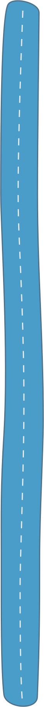
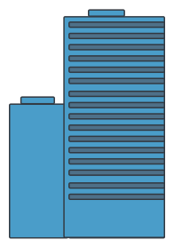

An Overview of My International Trade Experience
When I was an international trade manager, I oversaw the import and export activities in the
Americas supply
chain operations. I’d love to share with you some highlights how I was involved in the supply
chain
managment.


Business Initiatives
One key role was to perform analyses and deliver strategic recommendations to senior
executives related
to company initiatives, including setting up an warehouse and mergers and acquisitions
Vendor Management
Managed 2-3 vendor companies with multi-million spend per year. Identify cost reduction and performance
enhancement opportunities. Increased on-time customs clearance by 15%.
Operations
Investigated regionalized processes and lead a global team to revamp import processes to increase
accuracy of customs declarations on 20% of global shipments. Designed new Product Lifecycle Management
system features and orchestrated a cross-functional project
with the achievement of increasing global export speed by 5% and cutting manual hours by 300+ hours per
year.
Audits
Oversaw routine compliance audits of import and export customs declarations, shipping documentations,
and item classifications in database. Identified trade risks and closed gaps by enhancing daily compliance
audit to be comprehensive of all entries